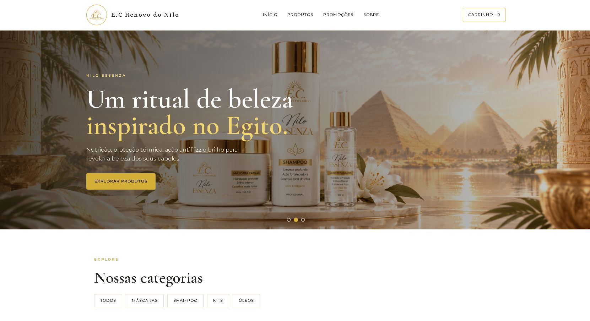
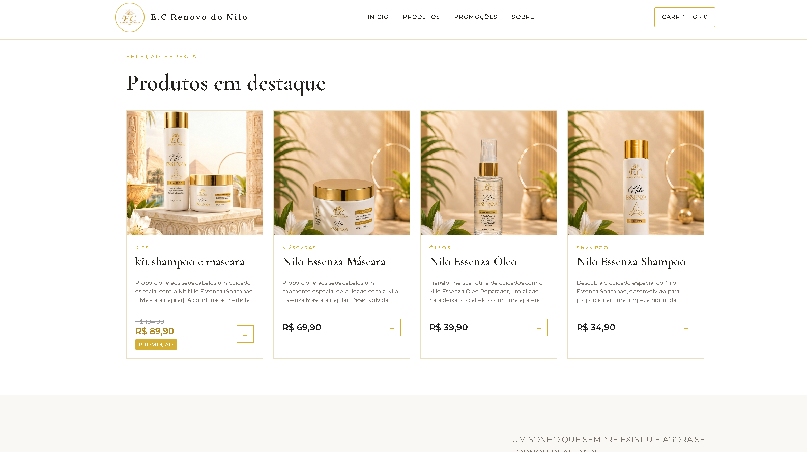

Renovo do Nilo.
Uma experiência de compra digital para uma marca de beleza.
Desenvolvimento de uma loja virtual para produtos capilares, com identidade visual própria, catálogo e recursos de gestão.
PythonFlaskSQLiteHTML / CSSJavaScript
Visitar loja
publicada ↗
01 / INTERFACE
Design e catálogo.
Identidade visual em tons claros e dourados, com apresentação de produtos, categorias e destaque para promoções.


02 / FUNCIONALIDADES
Da vitrine à gestão.
01
Catálogo e promoções
Cadastro, organização por categorias, produtos ativos e preços promocionais.
02
Gestão administrativa
Painel para administrar produtos e acompanhar pedidos da loja.
03
Checkout e contato
Fluxo de pedido com Pix manual e encaminhamento de informações pelo WhatsApp.